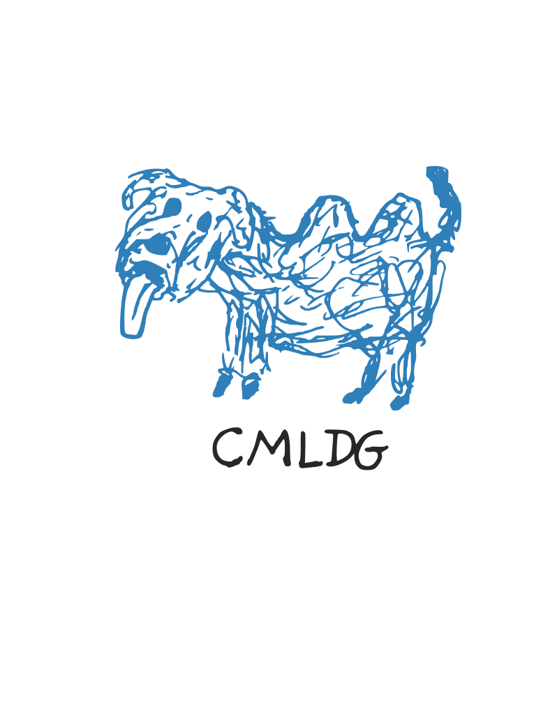

CMLDG
Chemical Machine Learning & Discussion Group. We meet to talk about machine learning in the chemical sciences. Everyone is welcome, from beginners to experts.
Join the groupChemical Machine Learning & Discussion Group. We meet to talk about machine learning in the chemical sciences. Everyone is welcome, from beginners to experts.
Join the group
Date: Thursday, 5 November 2026
Time: 16:00
Place: Seminar room 1.02, Chemistry building
Moderator: Your Name
CMLDG started as a small discussion round inside our working group. We read papers, try out tools, and talk about problems where machine learning meets chemistry.
Each session has one topic and one moderator who guides the discussion. You do not need to present anything to take part.
| Topic | Date | Moderator |
|---|---|---|
| Machine-learned interatomic potentials: where do they fail? | 24 Sep 2026 | Name A |
| Representing molecules: fingerprints, SMILES and graphs | 20 Aug 2026 | Name B |
| Introduction to ML in chemistry | 16 Jul 2026 | Name C |
Write to us to get the meeting invitations. If you want to moderate a session or suggest a topic, tell us in the same message.